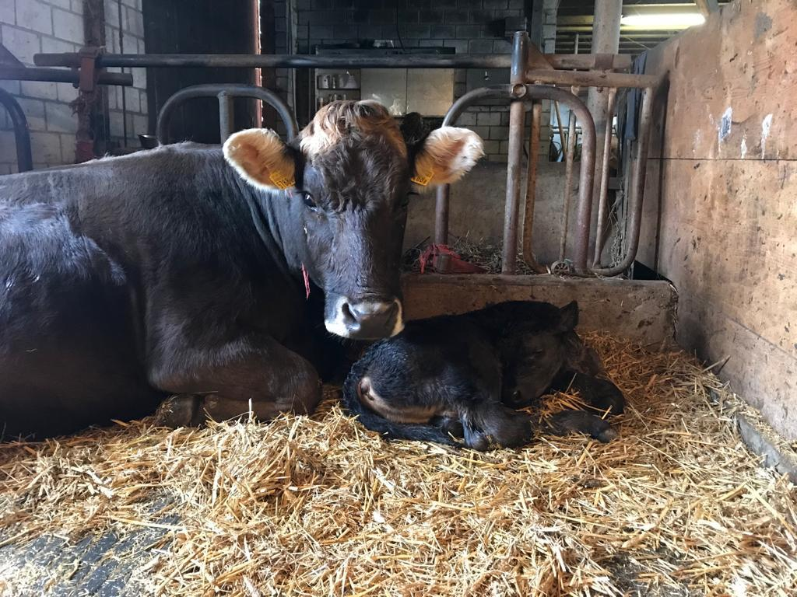
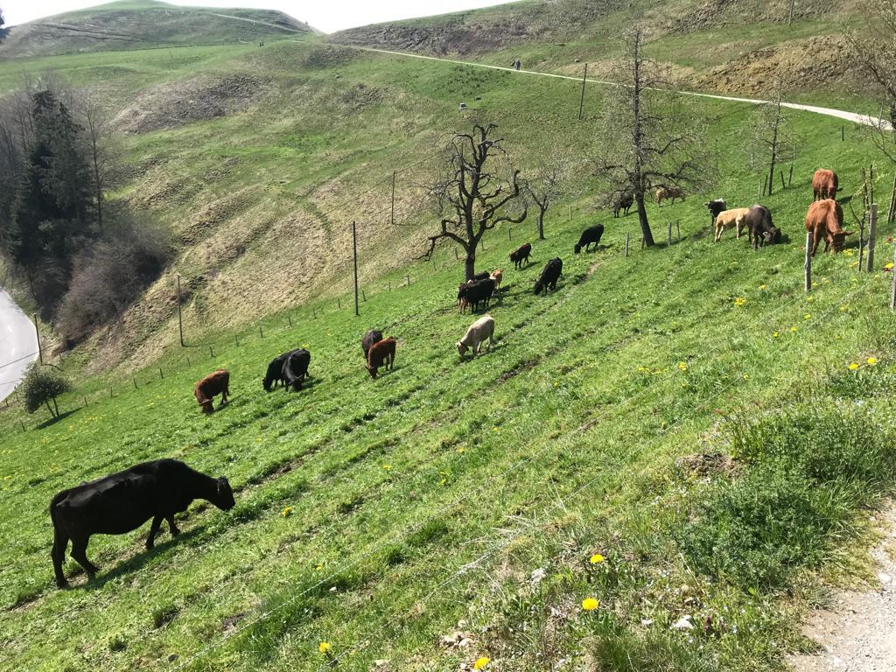
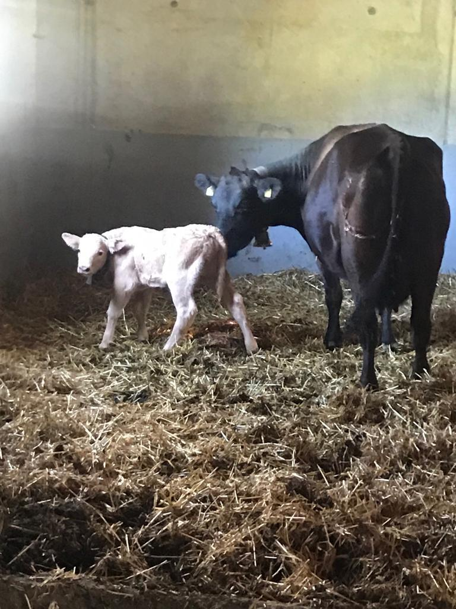

Fotos

Mutterkuh Lisa und Kalb Homer bleiben vereint!
Familytime
Nach dem unsicher war ob und wann unser männliches Kalb Homer auf einen Zuchthof kommt ist es nun definitv das er hier bleibt. Homer, welcher am 14.03.2020 geboren wurde, kann so nun die Kommende Zeit bei seiner Mutter verbringen. Wir sie froh den stolzen, kleinen Homer aufwachsen zu sehen.

Über 20'000 Quadratmeter Weide für unsere Liebsten
Unsere Weide
Nach unserem Umbau im Jahre 2014 und der Pachtung des Landes "L7836" im vergangenen Sommer, können wir nun mit vollem Stolz unsere Kühe auf unsere Weide lassen. So haben sie nebst dem Auslauf direkt neben dem Stall noch eine Externe weide in der Nähe der Landstrasse richtung Menznau. Leider mussten wir jedoch feststellen das unsere beiden Apfelbäume in der neuen Weide keine Früchte mehr tragen. Jedoch sind sie weiterhin ein Wilkommener Schattenspennder für die Jungs und Mädels auf der Weide!

Unser Kabl Maya macht fortschritte bei den ihren Gehversuchen
Wacklige schritte
Als maya Anfang dieses Jahres auf die Welt kam war durch Gelenkverletzungen im Knie noch nicht klar, wann und wie sie einmal laufen lernen wird. Nun macht sie vermehrt wacklige Schritte und wir dabei tatkräftig von ihrer Mutter unterstützt. Auch wenn sie in ihrer Entwicklung noch ein wenig zurück liegt sind wir fest davon überzeugt das sie schon bald vollumfänglich Fit sein wird.